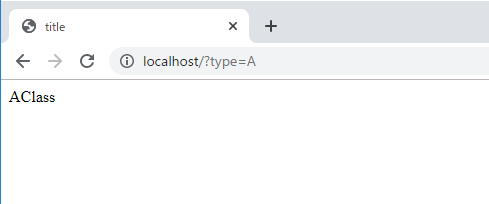
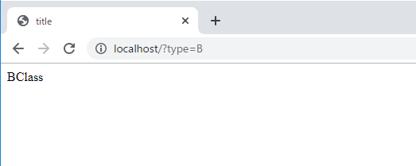
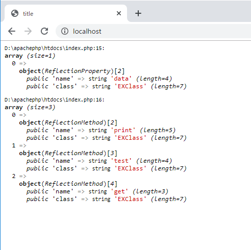

こんにちは。明月です。
Reflectionは以前JavaとC#でも説明したことがあります。
link - [C#] Reflection(リフレクション)
link - [Java] Reflection - Class編
Reflectionとはプログラム構造を投影して再構築する方法のプログラム技法です。
その意味は我々がクラスを「$obj = new Class()」形で宣言しますが、その宣言するクラスを動的宣言方法で使いたいことです。
つまり、パラメータで「Aタイプのクラスを宣言して」というデータがあればAタイプクラスを、「Bタイプのクラスを宣言して」というとBタイプのクラスを宣言することです。
if($type == "A") {
$obj = new AClass();
} else if($type == "B") {
$obj = new BClass();
}
上の例はReflectionではなく、我々がよく知っている形でクラスを宣言した方法です。パラメータでAを受取るとAクラスを宣言するしBを受取るとBクラスを宣言します。
普通だし、問題ないプログラムコーディングですが、もしクラスがAクラス、Bクラスだけではなくたくさんある場合にはどうでしょうか？
後、プロジェクトが大きくなるほど上のパラメータが増えると言えばどうでしょうか？
その時には「$obj = new $type.Class()」の形で作成したらどうかと思う時がありますね。
それがReflectionです。
<?php
class AClass {
public function print() {
return "AClass";
}
}
class BClass {
public function print() {
return "BClass";
}
}
//Query StringのTypeのパラメータからデータ取得
$name = $_GET["type"];
// ReflectionクラスによってClassを探す。
// パラメータがAならAClassを、BならBClassを探す。
$r = new ReflectionClass($name.'Class');
// $obj変数にnewInstance関数を呼出してインスタンスを生成する。
$obj = $r->newInstance();
?>
<!DOCTYPE html>
<html>
<head><title>title</title></head>
<body>
<?=$obj->print()?>
</body>
</html>


上の例ではパラメータから「type」を受け取ってReflectionを利用してクラスを宣言しました。
結果はブラウザのアドレスにQuery Stringの「type」に「A」を入れるとAClassのprintを呼出して「AClass」という結果が表示されました。
「type」に「B」を入れるとBClassのprintの関数で「BClass」の結果が表示されました。
<?php
class EXClass {
private $data = 10;
public function print() {
return "EXClass";
}
private function test() {
}
public function get() {
}
}
// Reflectionを利用してEXClassを宣言する。
$r = new ReflectionClass('EXClass');
// Reflectionの変数「r」のデータ構成を確認する。
// ReflectionPropertyの設定はアクセス修飾子の関係ずに全てのデータを確認する。
var_dump($r->getProperties( ReflectionProperty::IS_PUBLIC |
ReflectionProperty::IS_PROTECTED |
ReflectionProperty::IS_PRIVATE));
// Reflectionの変数「r」の関数構成を確認する。
var_dump($r->getMethods());
?>
<!DOCTYPE html>
<html>
<head><title>title</title></head>
<body></body>
</html>

Reflectionの「getProperties」と「getMethods」の関数でクラス内部のメンバー変数と関数の構成を確認できます。
上の結果を見ると変数には「data」が表示するし、関数には「print」、「test」、「get」がみえます。
アクセス修飾子も関係ずにデータがすべてみえますね。でもアクセス修飾子の情報と関数の場合はパラメータ返却情報がないですね。
実はあるのに、私がまだ知らない状況の可能性もあります。
link - https://www.php.net/manual/en/class.reflectionclass.php
Reflectionに関して続けて調べてみます。
- [CakePHP] PHPのCakeからAjax要請がある時、jsonタイプ(json_encode関数)でResponseする方法とControllerでViewを選択する方法2020/02/08 03:00:00
- [CakePHP] MVCフレームワークのCakeをインストールする方法2020/02/07 03:00:02
- [PHP] 自動require及びincludeをする方法(spl_autoload_register)2020/02/05 03:00:00
- [PHP] 匿名関数(ラムダ式)とクロージャ(closure)2020/02/04 03:00:00
- [PHP] PHPのコーディング領域とデザイン領域を分離するテンプレートライブラリ Smarty2020/02/02 03:00:00
- [PHP] Reflection - Variable編2020/02/01 03:00:00
- [PHP] Reflection - Method編2020/01/31 03:00:00
- [PHP] Reflection - Class編2020/01/30 03:00:00
- [PHP] エラーページ処理方法(追加: ob_cleanとdie関数使用方法)2020/01/29 03:00:00
- [PHP] 分散設定ファイル(.htaccess) 使用方法2020/01/28 03:00:00
- [PHP] データベース(mariaDB)を連結して使う方法2020/01/24 03:00:00
- [PHP] IOに関して2020/01/23 03:00:00
- [PHP] requireとinclude、そして「@」の使用方法2020/01/22 03:00:00
- [PHP] Fatal及びNotice,、Warningメッセージ処理する方法2020/01/19 03:00:00
- [PHP] xDebug設定する方法2020/01/18 03:00:00
- [Design pattern] 1-1. シングルトンパターン(Singleton pattern)2021/06/09 19:40:05
- [Design Pattern] デザインパターンの紹介2021/06/08 20:42:36
- [Tools] Dbeaver(無料Sql queryブラウザツール)2021/04/28 18:26:49
- [Bootstrap] HTMLデザインのフレームワークのBootstrap紹介2020/07/30 19:06:36
- [Python] メール(smtplib)を送信する方法2020/07/27 18:38:43
- [Python] HttpConnection(requestsモジュール)でウェブサーバーで接続する方法2020/07/20 14:41:51
- [Python] Excel(openpyxl)を扱う方法2020/07/16 16:40:31
- [Python] ファイル圧縮、解凍(zipfile)する方法2020/07/14 19:14:22
- [Python] Apache cgiでPythonを使う方法2020/07/09 19:58:19
- [Python] Web serverを起動する方法(http.server)2020/07/09 00:13:13
- [Python] WebSocketを使う方法2020/07/07 17:29:18
- [Python] PythonとJavaのソケット通信する方法2020/07/03 18:35:50
- [Python] PythonとC#のソケット通信2020/07/01 19:28:22
- [Python] INI(環境設定ファイル)を扱う方法2020/06/30 18:26:01
- [Python] Jsonを扱う方法2020/06/29 19:18:15